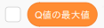
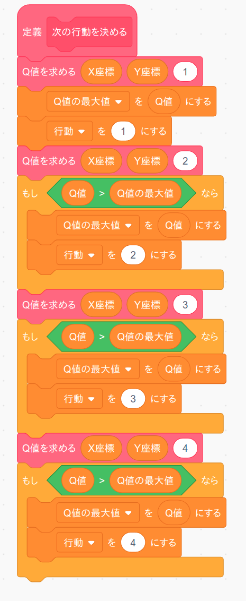

5. 右折する
これまで作ったプロクラムで前進と左折はうまく動くようになりましたが、右折しようとすると対向車にぶつかります。 そこで右折用のプログラムをここで作ります。
ただ、今の走行ルートは左まわりになっていますので、次のように「走行ルートを決める」ブロックの中身を置き換えて右まわりのルートになるようにして下さい。
置き換えたら試しに「緑の旗」ボタンを押して実行して下さい。 だいたいは対向車が気を利かせて止まってくれますが(多分かなり怒っています)、それでも時々対向車にぶつかると思います。
では「もし〜なら」ブロックの条件を考えてみましょう。
対向車を検知するセンサーは「前方-右センサー」ですので、次のような表になります。 なお直進車が優先なので、センサーの数値は前のページよりも少し遠目にしました。
| 「前方-右センサー」 | 「仮のスピード」 |
|---|---|
| 30 より大 (遠い) | 50 |
| 30以下、20より大 (近い) | 20 |
| 20以下 (直前) | 0 |
信号の時と同じ様に、この表を「もし〜ならば、でなければ」ブロックを使って置き換えると次のようになります。
| 「前方-右センサー」 | 「仮のスピード」 |
|---|---|
| 30 より大 (遠い) | 50 |
| でなければ | |
| 20より大 (近い) | 20 |
| でなければ | |
| 情報をつかわない (直前) | 0 |
これで「もし〜なら」ブロックの条件が分かりましたので早速プログラミングしてみましょう。
まず「右折する」というオリジナルブロックを作ります。 このブロックは繰り返し使いますので「画面を再描画せずに実行する」をチェックしてください。
「前の車にぶつからないようにする」ブロックの中身は次のようになります。 なお今回は"右折"という条件も必要です。 そこで右折をあらわす条件として「ナビの方向」が2、かつ「ナビの距離」が30未満としました。 それを除けば表の内容と「もし〜なら」ブロックの条件がまったく同じになっています。
あとは「速度を決める」ブロックを次のように変更すればOKです。

では「緑の旗」ボタンを押してテストしてみましょう。
もし他の車にぶつかったり、赤信号にひっかかったりしてゲームオーバーになる場合はセンサーなどの数値を調整(ちょうせい)してください。 この調整作業は本物の自動運転車を作る場合でもとても大事な作業になりますので、世界中のいろんな所で本物の自動運転車を走らせてテストをしている訳ですね。
チャレンジ
「前方-左センサー」と「前方-右センサー」は車の前方しかみないので、渋滞などでカーブした先に車がいると衝突するときがあります。 カーブの先にいる車を見つけるためには「左センサー」と「右センサー」も使う必要があります。 「左センサー」と「右センサー」も使ってカーブの先にいる車にぶつからないようにしてみましょう。